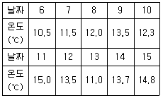
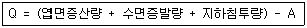

식물보호기사 (2008-09-07 기출문제)
1과목: 식물병리학
1. 고추 역병의 발병요인은?
- 건조
- 침수
- 고온
- 사질토양
(정답률: 76%)

2. 벼 잎집얼룩병(잎집무늬마름병)의 발생 조건이 아닌 것은?
- 밀식
- 만파만식
- 다비(多肥)
- 고온다습
(정답률: 63%)
3. 못자리나 기계이앙을 위한 상자 육묘에서 문제가 되는 벼의 주요 병은?
- 이삭누룩병
- 탄저병
- 흰가루병
- 모잘록병
(정답률: 89%)
4. 동물 유전자에 의해 코딩되지만 식물체내에서 식물에 의해 생성되는 항체를 무엇이라 하는가?
- Plantbody
- Microbody
- X-body
- Chromobody
(정답률: 79%)
5. 인축에 유독한 알칼로이드를 생성하는 것은?
- 호밀 맥각병균
- 옥수수 깨시무늬병균
- 배나무 붉은별무늬병균
- 맥류 줄기녹병균
(정답률: 74%)
6. 병환부의 표면에 나타나는 표징을 볼 수 없는 병은?
- 벼 흰잎마름병
- 보리 겉깜부기병
- 대나무 그을음병
- 오이 모자이크병
(정답률: 81%)
7. 비, 바람으로 상처를 입은 벼 잎가에 흰줄무늬(회백색 물결무늬)를 나타내는 세균으로 심하게 발병되면 수량저하를 초래하는 병원 세균이 속하는 속은?
- Streptomyces
- Pseudomonas
- Xanthomonas
- Agrobacterium
(정답률: 60%)
8. 포도나무 노균병균의 월동 형태는?
- 분생포자
- 난포자
- 접합포자
- 자낭포자
(정답률: 68%)
9. 식물바이러스의 분류 기준이 되는 특성이 아닌것은?
- 세포벽의 구조
- 핵산의 종류
- 매개체의 종류
- 입자의 형태적 특성
(정답률: 75%)
10. 도열병균의 한 레이스를 한 벼 품종에 접종하였더니 병반 형성이 전혀 없거나 과민성 반응이 나타났다면 이 품종은 어떤 저항성을 가지고 있는가?
- 수평 저항성
- 수직 저항성
- 포장 저항성
- 레이스 비특이적 저항성
(정답률: 65%)
11. 도열병이 다발하는 조건으로 가장 적합한 것은?
- 여러 가지 벼 품종을 섞어서 심었을 때
- 비가 자주 오고 일조가 부족하며 다습한 일기일 때
- 칼륨 비료를 과용하고 객토를 하였을 때
- 가뭄이 계속되고 기온이 30℃ 이상일 때
(정답률: 88%)
12. 녹병균(rust)이나 깜부기병(smut)균처럼 후막의 휴면포자인 겨울포자가 발아해서 전균사(promycelium)을 만드는 균이 소속된 분류군은?
- 담자균류
- 불완전균류
- 자낭균류
- 접합균류
(정답률: 70%)
13. 식물 세균의 종의 개념에서 옳지 않은 것은?
- 식물병원세균의 학명도 2명법을 사용한다.
- 식물세균의 종류에 따라서는 아종(subspecies)으로나누기도 한다.
- 병원형(pathovar)의 기재가 필요한 경우에는 종명 뒤에 pv.를 붙여 사용한다.
- 식물병원세균의 분류와 동정에서 분자생물학적 성질은 기준이 되기 어렵다.
(정답률: 85%)
14. 일반적으로 식물 바이러스병에 적용할 수 없는 진단방법은?
- 혈청학적 진단
- 배양학적 진단
- 핵산분석에 의한 진단
- 지표식물(indicator plant)에 의한 진단
(정답률: 55%)
15. 배추에 모자이크 병징을 일으키는 바이러스에는 오이모자이크바이러스(CMV)와 순무모자이크바이러스(TuMV)가 있다. 이들의 전염 방식은?
- 충매 전염
- 토양 전염
- 종자 전염
- 꽃가루 전염
(정답률: 75%)
16. 코흐(Koch)의 법칙이란 어느 경우에 사용하는 것인가?
- 병의 진단
- 시비량 결정
- 방제력 설정
- 매개충 확인
(정답률: 85%)
17. salicylic acid 또는 dichloroisonicotinic acid와 같은 화학물질에 의해 유도되는 것은?
- 파이토플라스마의 변이기작
- 유도저항성
- 표징 발현
- 수지도 확대
(정답률: 75%)
18. 식물병의 성립에 필요한 3가지 요인은?
- 병원, 병원성, 소인
- 환경, 온도, 기주
- 병원, 기주, 품종
- 병원, 기주, 환경
(정답률: 95%)
19. 10% 뷰프로페진 분제 10Kg을 2.5%의 분제로 만들려면 몇Kg의 증량제가 필요한가?
- 0.3kg
- 3kg
- 30kg
- 300kg
(정답률: 75%)
20. 식물체에 암종(gall)을 형성하며, 유전공학 연구에 많이 쓰이는 식물병원 세균은?
- Xanthomonas campestris
- Clavibacter michiganensis
- Erwinia amylovora
- Agrobacterium tumefaciens
(정답률: 89%)
2과목: 농림해충학
21. 탈피 후 표피층을 경화시키는 호르몬은?
- bursicon
- diuretic hormone
- eclosion hormone
- proctolin
(정답률: 79%)
22. 곤충 암수 생식기관의 구조 중 상동성이 아닌 것은?
- 알집소관 - 고환소포
- 수정낭 - 저장낭
- 옆수란관 - 수정관
- 중앙산란관 - 사정관
(정답률: 73%)
23. 내충성과 관련된 설명으로 옳은 것은?
- 작물의 해충에 대한 저항성은 유전적인 것으로, 이러한 유전적 특성의 발현은 환경요인에 거의 영향을 받지 않는 것이 특징이다.
- 저항성 품종의 이용은 그 자체로서 해충밀도를 억제할 수 없고 살충제의 이용효과를 보완하는 기능만 한다.
- 생태형이란 지금까지 내충성을 나타내던 품종을 가해할 수 있는 새로운 계통의 해충개체군을 말한다.
- 내충성은 살충제와는 달리 해충의 종류에 대한 특이성이 없으나, 그 효과는 누적적이며 장기간 걸쳐 지속된다.
(정답률: 41%)
24. 애멸구와 관련된 설명으로 가장 거리가 먼 것은?
- 피해는 벼의 생육기 중 본엽 11엽기 이후가 가장 문제가 된다.
- 월동한 후 맥류에서 1세대를 거친다.
- 1년에 5세대를 거친다.
- 주로 4령의 약충으로 월동한다.
(정답률: 52%)
25. 곤충강의 특징이 아닌 것은?
- 입틀이 밖에 고정되어 있다.
- 더듬이는 한쌍이다.
- 다리에 마디가 없다.
- 외골격이 있다.
(정답률: 84%)
26. 발생예찰의 방법 중 가장 기본이 되는 것으로서 다른 방법에 비하여 선행되는 것은?
- 실험적 방법
- 통계적 방법
- 야외조사 및 관찰방법
- 컴퓨터 이용방법
(정답률: 78%)
27. 나방류와 비슷하며, 유충과 번데기 시기에 수서 생활을 하는 것은?
- 강도래
- 날도래
- 뿔잠자리
- 매미
(정답률: 47%)
28. 일생을 통하여 입틀(口器)의 형(形)이 변하지 않는 것은?
- 학질모기
- 꿀벌
- 말매미
- 배추흰나비
(정답률: 72%)
29. 일반적으로 온대지방에서 1년에 2회 또는 그 이상 발생하는 해충은?
- 숯검은밤나방
- 검거세미나방
- 벼잎벌레
- 땅강아지
(정답률: 68%)
30. 다음 용어 중 곤충 분류에서 주로 사용되지 않는 것은?
- 종
- 속
- 아종
- 변종
(정답률: 73%)
31. 톱다리개미허리노린재에 대한 설명으로 틀린 것은?
- 약충의 형태가 개미와 유사하다.
- 흡즙성 해충이다.
- 알로 월동한다.
- 주로 콩꼬투리를 가해한다.
(정답률: 59%)
32. 곤충의 혈림프로 방출되는 탄수화물의 저장태는?
- 글리코겐
- 무코다당류
- 키틴
- 트레할로스
(정답률: 55%)
33. 어떤 곤충의 발육영점온도가 11℃이다. 월동 중 4월6일부터 15일까지 10일 동안 일일평균온도(℃)가 아래와 같을 때, 이 곤충의 10일간 발육적산온도(일도)는?

- 17.8
- 18.3
- 16.8
- 17.3
(정답률: 65%)
34. 미국흰불나방의 학명으로 옳은 것은?
- Monema flavescens Walker
- Hyphantria cunea Drury
- Adrias tyrannus Guenee
- Pygaera anachoreta Fabricius
(정답률: 84%)
35. 2령충이란 어느 기간의 유충을 뜻하는가?
- 산란이후 부화 직전까지
- 부화직후부터 1회 탈피 전까지
- 1회 탈피 후 2회 탈피 전까지
- 한잠 잔 후 두잠 자기 전까지
(정답률: 85%)
36. 곤충의 표피층은 배자발육 단계에서 어느 부분이 발달된 것인가?
- 내배엽
- 외배엽
- 중배엽
- 극세포
(정답률: 68%)
37. 일반적인 곤충의 소화계에서 전장에 속하는 소화계는?
- 모이주머니(crop)
- 위(ventriculus)
- 말피기관
- 위맹낭(gastric caecum)
(정답률: 75%)
38. 침투성 살충제에 관한 설명으로 틀린 것은?
- 식물체내 전체에 이동한다.
- 일반적으로 약효기간이 1개월 이내로 짧다.
- 뿌리에서 흡수시킬 수도 있다.
- 종자에 분의(枌衣)처리할 수도 있다.
(정답률: 51%)
39. 곤충의 뇌 중에서 가장 크고 복잡하며, 광(光)감각을 받아들이며 중앙신경분비세포군을 거느리는 것은?
- 전대뇌
- 중대뇌
- 후대뇌
- 원시뇌
(정답률: 82%)
40. 곤충의 순환계에 대한 설명 중 틀린 것은?
- 개방계이다.
- 심장은 등쪽에 있다.
- 산소를 세포에 운반한다.
- 혈액(hemolymph)은 혈장과 혈구세포로 이루어진다.
(정답률: 63%)
3과목: 재배학원론
41. 과수의 정지방법으로서 배상형이 주로 적용되는 것은?
- 복숭아
- 포도
- 사과
- 감
(정답률: 46%)
42. 종자 휴면의 원인과 가장 거리가 먼 것은?
- 발아억제 물질의 부족
- 경실(硬實)
- 배의 미숙
- 종피의 산소흡수의 저해
(정답률: 66%)
43. 벼의 관수해(冠水害)가 가장 심하게 나타나는 수질은?
- 흐르는 맑은 물
- 흐르는 흙탕물
- 정체한 맑은 물
- 정체한 흙탕물
(정답률: 89%)
44. 작물의 동상해 대책이 아닌 것은?
- 배수를 하여 생육을 건실하게 한다.
- 칼리 비료 시용량을 높인ㄷ.
- 퇴비 시용량을 높인다.
- 맥류의 경우 이랑을 세워 뿌리골을 얕게 한다.
(정답률: 73%)
45. 발아에 광선이 필요하지 않는 작물은?
- 상추
- 금어초
- 담배
- 호박
(정답률: 61%)
46. 다음 비료 종류 중 산성토양(酸性土壤)에 사용하기에 가장 알맞은 것은?
- 황산(黃酸)암모니아
- 용성인비(溶成燐肥)
- 중과석(重過石)
- 염화(鹽化)칼륨
(정답률: 72%)
47. 밭 토양의 양이온치환용량(CEC)은 12.5cmolc/kg 이고, K+이 0.6, Ca+2 이 4.2, Mg+2 이 1.5cmolc/kg이었다. 밭 토양의 염기포화도는?
- 6.2%
- 18.8%
- 50.4%
- 81.2%
(정답률: 57%)
48. 기지현상의 발생이 가장 크게 우려되는 작물은?
- 벼
- 보리
- 담배
- 수박
(정답률: 70%)
49. 휴한작물(休閑作物)에 속하는 것은?
- 클로버, 콩
- 옥수수, 호밀
- 벼, 보리
- 조, 기장
(정답률: 77%)
50. 다음 논의 용수량(Q) 계산수식에서 A에 해당되는 것은?

- 강수량
- 강우량
- 유효우량
- 흡수량
(정답률: 63%)
51. 종자의 분류에서 무배유종자인 것으로만 묶인 것은?
- 벼, 밀
- 옥수수, 벼
- 콩, 팥
- 밀, 팥
(정답률: 78%)
52. 작물 군락의 수광태세에 대한 일반적인 설명으로 옳은 것은?
- 벼의 분얼은 개산형(開散型)인 것이 좋다.
- 옥수수는 수이삭이 큰 것이 밀식에 잘 적응한다.
- 콩은 잎이 크고 굵은 것이 좋다.
- 벼의 키가 클수록 수광태세가 좋아진다.
(정답률: 43%)
53. 완전히 자가수정을 하는 동형접합체의 1개체로 부터 불어난 자손의 총칭은?
- 계통
- 순계
- 종
- 품종
(정답률: 75%)
54. 저온기에 투명비닐을 이용하여 멀칭 재배할 때 유리한 점이 아닌 것은?
- 토양의 건조방지
- 지온상승
- 토양침식 방지
- 잡초발생 억제
(정답률: 61%)
55. 어느 품종(A)의 특정형질을 다른 품종(B)에 옮기려고 할 때 다음 중 가장 효율적인 방법은?
- 단교잡법
- 여교잡법
- 3원교잡법
- 다계교잡법
(정답률: 84%)
56. 땅속줄기를 종묘로 이용하는 것은?
- 토란
- 생강
- 마늘
- 부추
(정답률: 62%)
57. 사탕무의 속썩음병, 순무의 갈색속썩음병, 샐러리의 줄기 쪼김병, 담배의 끝마름병 등과 관련있는 필수원소는?
- 망간
- 붕소
- 아연
- 몰리브덴
(정답률: 84%)
58. 잡종 종자의 생산방식을 표현한 것으로 틀린 것은?
- 복교잡 ; (A × B) × (C × D)
- 3계교잡; (A × B) × C
- 단교잡법; A × B × C × D × .....× N
- 다계교잡; [(A × B) × (C × D)] × [(E × F) ×(G × H)]
(정답률: 66%)
59. 수해가 유발될 때 작물체내에 가장 많이 집적되는 물질은?
- 옥살초산
- 피부르산
- 에탄올
- 젖산
(정답률: 77%)
60. 작물의 결실과 온도와의 관계에 대한 설명으로 옳은 것은?
- 생육가능 온도내에서 주, 야간의 온도는 항온(恒溫)이 변온보다 좋다.
- 변온조건에서 결실이 좋아지는 작물이 많다.
- 주간은 저온이고 야간은 온도가 높을수록 좋다.
- 주간만 온도가 높으면 야간은 낮을수록 좋다.
(정답률: 74%)
4과목: 농약학
61. 고독성 농약에 해당하는 농약의 급성 경구독성(LD50)은 얼마인가?(단, 농약은 고체이며, 단위는 mg/kg 체중이다.)
- 5 미만
- 5 이상, 50 미만
- 50 이상, 500 미만
- 500 이상
(정답률: 57%)
62. 농약 보조제의 작용으로 전착제가 갖추어야 할 조건으로 가장 거리가 먼 것은?
- 확전성
- 부착성
- 고착성
- 침윤성
(정답률: 70%)
63. 메프유제 50%를 0.⑤% 로 희석하여 10a 당 100L를 살포 하려고 할 때 소요약량은 약 몇 mL 인가? (단, 비중은 1.008 이다.)
- 99.2
- 109.2
- 119.2
- 129.2
(정답률: 52%)
64. 다음 중 TLm(48시간)은 어떤 동물에 대한 독성 농도를 의미 하는가?
- 조류
- 파충류
- 수생동물
- 포유동물
(정답률: 86%)
65. 다음 살충제 중 유기인제가 아닌 것은?
- 테트라디폰(테디온)
- 디디브이피(DDVP)
- 파라치온
- 파프(PAP)
(정답률: 57%)
66. 다음 중 착색ㆍ숙기촉진을 위해서 사용하는 약제는?
- ethephon
- IBA
- calcite
- butralin
(정답률: 77%)
67. 다음 중 살균제의 작용기작에 해당되지 않은 것은?
- SH기 저해
- 전자전달 저해
- 산화적 인산화 저해
- Synapse전막 저해
(정답률: 59%)
68. 농약제제시 사용되는 다음 계면활성제 중 음이온성 계면 활정제는 어느 것인가?
- polyoxyetylene thioether
- sodium dodecylbenzene sulfonate
- lauryl trimetylammonium chloride
- dioctyl trimetylammonium chloride
(정답률: 55%)
69. 약제의 처리법 중 수면시용법이 갖추어야 할 특성으로 틀린 것은?
- 물에 잘 풀리고 널리 확산되어야 한다.
- 물이나 미생물 또는 토양성분 등에 의하여 분해되지 않아야 한다.
- 수중에서 장시간에 걸쳐 녹아 약액의 농도를 유지하여야 한다.
- 가급적 약제의 일부는 수중에 현수되도록 친수 및 발수성을 갖추어야 한다.
(정답률: 72%)
70. 다음 중 보호 살균제 농약은?
- 키타진
- 석회보르도액
- 스트렙토마이신
- 가스가민
(정답률: 76%)
71. 농약 중독에 대한 응급조치 방법으로 틀린 것은?
- 응급조치의 근본적인 방법은 중독의 원인물질을 가능한 빨리 환자 체외로 제거하는 것이 중요하다.
- 경피적(經皮的)으로 중독시에는 오염된 작업복을 벗기고 피부를 비눗물로 깨끗이 씻겨야 한다.
- 경기도적(經氣道的)으로 중독되었을 때는 환자를 신선한 장소로 옮겨 의복을 느슨하게 하여 토하게 한다.
- 중독되어 경련을 일으키거나 그 증상을 보일때는 따뜻한 소금물을 마시게 하여 토하게 한다.
(정답률: 77%)
72. 도마도톤 액제를 500배 액으로 희석할 경우 물20L 에 대한 원액 사용량은 몇 mL 인가?
- 0.4
- 4
- 40
- 400
(정답률: 75%)
73. 다음 중 전착효과를 나타내는 물질은?
- 펜크로림(fenclorim)
- 벤토나이트(bentonite)
- 폴리옥시에틸렌(polyoxyethlylene)
- 피페로닐 부톡사이드(piperonyl butoxide)
(정답률: 45%)
74. 훈증제가 갖추어야 할 조건으로 틀린 것은?
- 휘발성이 커야 한다.
- 침투성이 커야 한다.
- 인화성이 커야 한다.
- 목적물에 이화학적 변화를 일으켜서는 안된다.
(정답률: 82%)
75. 다음 제초제에 대한 설명 중 틀린 것은?
- 세톡시딤은 선택성 제초제이다.
- 파라코는 비선택성 제초제이다.
- 제초기능에 있어 선택성이 있는 것과 없는 것이 있다.
- 식물의 종류에 관계없이 모든 식물에 해를 나타내는 것을 선택성 제초제라 한다.
(정답률: 88%)
76. 다음 미립제(microgranule)농약에 대한 설명 중 틀린 것은?
- 평균 입도가 20㎛ 내외이다.
- 살포가 쉬워 살포능률이 높다.
- 벼 생육후기 하부서식 병해충 방제에 효과적이다.
- 약제의 표류, 비산에 의한 환경오염을 방지하고 사용자에게 안전하다.
(정답률: 50%)
77. 수화제 농약을 물에 희석하였을 때 고체상의 입자가 용액중에 균일하게 분산되는 성질을 무엇이라 하는가?
- 수화성
- 수용성
- 유화성
- 현수성
(정답률: 74%)
78. 식물성 살충제로서 온혈동물(溫血動物)에는 독성이 없는 농약은?
- nicotine 제
- anabasine 제
- 송지합제
- pyrethrin 제
(정답률: 65%)
79. 다음 중 농약의 저항성 발달 정도를 표현하는 저항성계수를 옳게 나타낸 것은?
- 저항성 LD50 / 감수성 LD50
- 감수성 LD50 × 저항성 LD50
- 감수성 LD50 / 복합저항성 LD50
- 감수성 LD50 × 복합저항성 LD50
(정답률: 73%)
80. 유기인계 계통의 약제를 알칼리성 농약과 혼용을 피해야 하는 주된 이유는?
- 약해가 심하기 때문이다.
- 물리성이 나빠지기 때문이다.
- 가수분해가 일어나기 때문이다.
- 종합반응을 하여 다른 물질로 되기 때문이다.
(정답률: 81%)
5과목: 잡초방제학
81. 종합적 방제법에 대한 설명으로 틀린 것은?
- 제초제 약해와 환경 오염을 줄일 수 있다.
- 화학적 방제를 배제하고 생태적 방제와 예방적 방제를 주로 사용한다.
- 여러 가지 다른 방제법을 상호 협력적으로 적용하는 방식이다.
- 잡초 군락의 크기가 감소되고 작물의 생산력이 증대 되는 효과가 있다.
(정답률: 77%)
82. 10a 당 3kg을 사용하는 약제를 가지고 500m2에 사용하려면 필요 약량은?
- 1.5kg
- 15kg
- 2.0kg
- 25kg
(정답률: 42%)
83. 다음 작물 중 잡초방제한계기간이 가장 짧은 작물은?
- 보리
- 벼
- 녹두
- 콩
(정답률: 69%)
84. 다음 중 논에 사용하는 것이 부적당한 제초제는?
- 뷰타클로르ㆍ카펜트라존에틸 입제
- 이사디 액제
- 옥사디아존 유제
- 알라클로르 유제
(정답률: 53%)
85. 최근 우리나라 논에서 설포닐우레아계 제초제에 대한 저항성 생태형으로 출현한 것이 아닌 것은?
- 피
- 미국외풀
- 물달개비
- 알방동사니
(정답률: 59%)
86. 화학적 잡초 방제법의 장점은?
- 환경에 잔류 가능성이 없음
- 약해가 없음
- 살초작용이 빠름
- 생물에 안전함
(정답률: 81%)
87. 2년생 잡초에 대한 설명으로 틀린 것은?(오류 신고가 접수된 문제입니다. 반드시 정답과 해설을 확인하시기 바랍니다.)
- 대부분 반지중식물이다.
- 로제트(rosette) 형태로 월동한다.
- 주로 온대지역에서 볼 수 있는 잡초이다.
- 월동이후 화아분화하여 개화, 결실한 후 고사한다.
(정답률: 50%)
88. 1년생 광엽잡초로 밭에서 문제가 되는 잡초는?
- 흰명아주(Chenopodium album)
- 물달개비(Monochoria vaginalis)
- 가래(Potamogeton distinctus)
- 뚝새풀(Alopecurus aequalis)
(정답률: 48%)
89. 주로 종자만으로 번식하는 잡초는?
- 피, 진득찰, 올미
- 명아주, 올방개, 가막사리
- 뚝새풀, 바보여뀌, 마디꽃
- 벗풀, 한련초, 붉은서나물
(정답률: 48%)
90. 작물과 잡초간 경합의 한계밀도(critical thresholdlevel)란?
- 잡초의 밀도가 어느 한계에 다다른 후부터 작물의 수량을 크게 감소시키는 밀도
- 잡초의 생장을 촉진시키는 한계밀도
- 더 이상의 경합이 일어나지 않는 밀도
- 영양생장에서 생식생장으로 넘어가는 한계밀도
(정답률: 82%)
91. 1년생 잡초에서 줄기 및 윗부분에서 1차 예취를 하고 재생 후 아주 낮게 2차 예취를 해주면 효과적인 제초가 가능한 것은 식물의 어떤 특성을 이용한 것인가?
- 정아우세 현상(apical dominance)
- 체질적 다형성(somatic polymorphism)
- 2차 휴면(secondary dormancy)
- 1차 휴면(primary dormancy)
(정답률: 61%)
92. 다음 중 제초제의 잔효성(persistence)에 미치는 영향이 가장 적은 것은?
- 토성
- 유기물 함량
- 온도
- 계면활성제
(정답률: 63%)
93. 잡초의 정의로 가장 적합한 것은?
- 초본식물만을 대상으로한 바람직하지 않은 식물
- 생활주변 식물 중 순화된 식물
- 인간의 의도에 역행하는 존재가치상의 식물
- 농경지나 생활주변에서 제자리를 지키는 식물
(정답률: 88%)
94. 기생성, 식해성 및 병원성을 지닌 생물을 이용하여 잡초의 발생밀도를 감소시키는 제초방법은?
- 화학적 방제법
- 생물적 방제법
- 생태적 방제법
- 종합적 방제법
(정답률: 84%)
95. 제초제 계통의 일반적인 주요 작용기작이 잘못 연결된 것은?
- 트리아진계 - 지질 생합성 억제
- 설포닐우레아계 - 아미노산 생합성 억제
- 피리다지논계 - 색소체 형성 억제
- 디페닐에테르계 - 세포막 파괴
(정답률: 57%)
96. 잡초의 여러 기관에서 작물의 발아나 생육을 억제하는 특정물질을 분비함으로서 피해를 일으키는 작용은?
- Competition
- Allelopathy
- Parasitism
- Transmission
(정답률: 66%)
97. 주요 잡초들 중에 식물분류학적으로 분포비율이 높은 과(科)로만 나열된 것은?
- 방동사니과, 화본과, 십자화과
- 화본과, 콩과, 메꽃과
- 국화과, 화본과, 방동사니과
- 국화과, 방동사니과, 가지과
(정답률: 71%)
98. 잡초의 생산효과에 미치는 C3식물과 C4식물에 대한 설명으로 틀린 것은?
- 세계적으로 문제가 되는 대부분의 잡초종들은 C4식물인 반면, 주요작물종들은 C3식물이다.
- C4식물은 RuBP carboxylase, C3식물은 PEPcarboxylase 효소가 CO2의 고정에 관여한다.
- C4식물은 광합성 효율이 높은 반면, C3식물은 광합성 효율이 상대적으로 낮다.
- C3식물은 높은 광도 및 온도조건에서 광호흡이 촉진되나, C4식물은 그 양이 매우 낮다.
(정답률: 68%)
99. 논 제초제의 약해발생 원인으로 볼 수 없는 것은?
- 활착 불량묘
- 모래 땅
- 심수
- 완숙유기물 시용
(정답률: 76%)
100. 벼와 광경합 시 가장 큰 피해를 주는 잡초는?
- 돌피
- 올방개
- 벗풀
- 물달개비
(정답률: 85%)